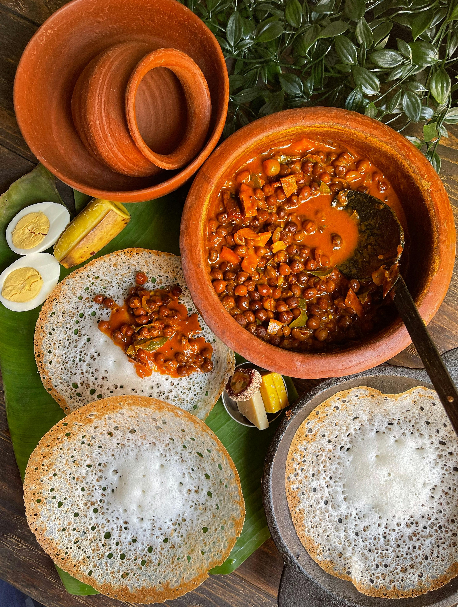

Preserving the Taste of Kerala
Welcome to Kerala Foods, a culinary chronicle dedicated to celebrating and preserving the rich and diverse food traditions of Kerala.
From the iconic breakfast staples like fluffy Appam and aromatic Puttu to rich, coconut-infused seafood curries and grand festive Sadya meals, we bring you authentic recipes and cooking tips straight from the heart of God's Own Country.

Our Core Mission
We aim to bring traditional home-cooking recipes to food lovers and home chefs worldwide, keeping the authentic tastes alive.
100+ Authentic Dishes
Curated and tested recipes spanning all across Kerala's regional micro-cuisines.
Step-by-Step Guides
Clear, easy-to-follow directions and visual cues for stress-free traditional cooking.
Natural Spices
Insights into local spices, key coconut techniques, and native ingredients.
Why This Blog?
Kerala cuisine is renowned for its unique blend of spices, coconut oils, mustard seeds, curry leaves, and local vegetables/meats. However, traditional techniques can sometimes feel intimidating to modern home cooks.
This blog simplifies these procedures without sacrificing authenticity. We trace the origins of dishes and provide exact measurements so you can replicate true local taste consistently.
Based in Kerala, India
Our kitchen is based right here in Kochi, Kerala. This lets us bring you authentic, local flavors directly from the primary source, utilizing fresh spices and native culinary expertise.